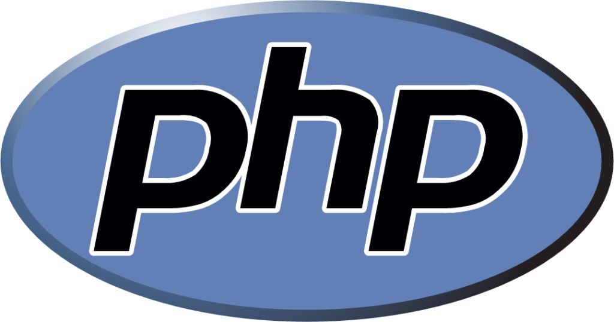

Mouhammad DIALLO
Étudiant en Licence 2 Ingénierie Informatique
Université Assane SECK de Ziguinchor

Bienvenue dans mon Portfolio ^^
Je suis Ameth DIALLO, 19ans, et je suis un passionné de l'Informatique.
Je suis Ameth DIALLO, 19ans, et je suis un passionné de l'Informatique.
Depuis mon plus jeune âge, j’ai toujours été fasciné par tout ce
qui touche à la technologie. Cette passion, qui a grandi au fil des années,
a façonné mes choix et m’a guidé vers la poursuite de mes rêves. Aujourd’hui, je
m’engage pleinement dans cette voie avec l’objectif de contribuer de manière significative
au secteur de l’informatique.
Mon ambition est de faire partie des innovateurs qui repoussent les limites de la technologie, en développant des solutions qui transforment notre quotidien et propulsent l’industrie vers de nouveaux horizons. Que ce soit à travers le développement logiciel, l’intelligence artificielle, ou la cybersécurité, je souhaite apporter ma pierre à l’édifice et participer à des projets qui ont un impact réel sur le monde.
Avec une curiosité insatiable, un esprit d’analyse et une détermination sans faille, je suis convaincu que l’avenir de la technologie repose sur la collaboration, la créativité et la volonté de repenser ce qui est possible. Mon parcours est une promesse: celle de contribuer à cet avenir et de laisser une empreinte durable dans le domaine de l’informatique.
Mon ambition est de faire partie des innovateurs qui repoussent les limites de la technologie, en développant des solutions qui transforment notre quotidien et propulsent l’industrie vers de nouveaux horizons. Que ce soit à travers le développement logiciel, l’intelligence artificielle, ou la cybersécurité, je souhaite apporter ma pierre à l’édifice et participer à des projets qui ont un impact réel sur le monde.
Avec une curiosité insatiable, un esprit d’analyse et une détermination sans faille, je suis convaincu que l’avenir de la technologie repose sur la collaboration, la créativité et la volonté de repenser ce qui est possible. Mon parcours est une promesse: celle de contribuer à cet avenir et de laisser une empreinte durable dans le domaine de l’informatique.
Éducation
Universitaire
Université Assane SECK de Ziguinchor
Ziguinchor, Ziguinchor, Sénégal
Licence en Ingénierie Informatique
Niveau 1 - De Avril 2024 à Février 2025
Semestre 1
Majeurs: Algorithmique 1, Programmation,
Architecture
et Technologie des Ordinateurs, Initiation aux systèmes d'exloitations.
Mineurs: Techniques d'Expression et de Communication, Anglais 1, Mathématiques pour l'Informatique 1, Mathématiques Discrètes 1.
Mineurs: Techniques d'Expression et de Communication, Anglais 1, Mathématiques pour l'Informatique 1, Mathématiques Discrètes 1.
Semestre 2
Majeurs:Algorithmique 2, Mathématiques pour
l'Informatique
2, Programmation, Initiation à la Programmation Web.
Mineurs: Projet Professionnel et Personnel, Anglais 2, Electricité, Electromagnétisme, Mathématiques Discrètes 2.
Mineurs: Projet Professionnel et Personnel, Anglais 2, Electricité, Electromagnétisme, Mathématiques Discrètes 2.
Niveau 2 - Depuis Avril 2025
Semestre 3
En cours...
Secondaire
Lycée Technique Seydina LIMAMOU LAYE
Guédiawaye, DAKAR, Sénégal
Diplome de BACHELIER de l'enseignement du SECOND DEGRÉ (Série T2) Mention Electronique -
Electrotechnique
Obtenu en JUIN 2022
Obtenu en JUIN 2022
Durant mes trois années au lycée, j’ai acquis une solide connaissance en électronique ainsi
qu’en électrotechnique. Grâce aux travaux pratiques en atelier,
j’ai eu l’opportunité de me
perfectionner en câblage électrique domestique et de m’initier au câblage industriel. J’ai
également suivi un module d’initiation à l’informatique, ce qui a
éveillé mon intérêt pour ce
domaine. C’est ainsi qu’après l’obtention de mon baccalauréat, j’ai décidé de
poursuivre une
licence en ingénieurie informatique.
Compétences
Développement Web
Langage de programmation

Outils
Projet
Comming soon